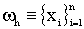
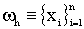
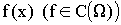
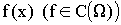
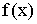

II. ОСНОВНЫЕ ПОНЯТИЯ И ОПРЕДЕЛЕНИЯ ВЫЧИСЛИТЕЛЬНОЙ МАТЕМАТИКИ
Пространство сеточных функций. В настоящем разделе мы обсудим такие понятия
вычислительной математики как сеточная область и сеточная функция, определим
семейство норм в пространстве сеточных функций и исследуем их свойства.
Определение
1. Произвольное конечное множество
 точек из
точек из
 (q - целое и положительное) будем называть сеточной областью в
(q - целое и положительное) будем называть сеточной областью в
 , а его элементы - узлами сетки или просто узлами. Число элементов множества
будем обозначать символом
, а его элементы - узлами сетки или просто узлами. Число элементов множества
будем обозначать символом
 . Пусть
- произвольная область в
. Пусть
- произвольная область в
 . Если множество точек
. Если множество точек
 содержится в
содержится в
 , то говорят, что в области
задана сетка
или
, то говорят, что в области
задана сетка
или
 аппроксимируется сеточной областью
аппроксимируется сеточной областью


Примеры сеточных областей.
Пусть
- отрезок в
. В качестве сеточной области
 , аппроксимирующей
, аппроксимирующей
 , можно рассматривать множество
 точек
, можно рассматривать множество
 точек
В этом случае будем говорить, что на отрезке
задана равномерная сетка
, а величину
будем называть шагом сетки
 .
.
Пусть
- прямоугольник в
. Равномерной сеткой в прямоугольнике
 можно считать множество
можно считать множество
 , элементами которого являются точки:
, элементами которого являются точки:
Шагами сетки по «направлениям x и y» будем называть соответственно величины
, которые определим следующими соотношениями:
Определение 2.
Предположим, что в
задана некоторая сеточная область
 . Функцию
, определенную на множестве
. Функцию
, определенную на множестве
 и принимающую вещественные значения, будем называть
сеточной функцией.
и принимающую вещественные значения, будем называть
сеточной функцией.
Пусть
в области
 рассмотрим некоторую сетку
рассмотрим некоторую сетку
 . Произвольной непрерывной в области
. Произвольной непрерывной в области
 функции
 сопоставим некоторую сеточную функцию
по правилу:
функции
 сопоставим некоторую сеточную функцию
по правилу:
Сеточную функцию
будем называть
проекцией непрерывной функции
 во множество сеточных функций.
Проекцию непрерывной функции
 во множество сеточных функций можно выбрать и другим способом, например, если
во множество сеточных функций можно выбрать и другим способом, например, если
 из примера 1), то в качестве проекции функции
можно рассмотреть функцию:
из примера 1), то в качестве проекции функции
можно рассмотреть функцию:
Определение
3. Обозначим символом
- множество сеточных функций, заданных в области
 , с «естественным образом» определенными на этом множестве операциями сложения (вычитания) функций и умножения функций на вещественное число. Будем говорить, что на множестве
задана норма, если определено однозначное соответствие:
, с «естественным образом» определенными на этом множестве операциями сложения (вычитания) функций и умножения функций на вещественное число. Будем говорить, что на множестве
задана норма, если определено однозначное соответствие:
для любого
 ,
или, что то же самое:
которое удовлетворяет следующим условиям (аксиомам нормы):
,
или, что то же самое:
которое удовлетворяет следующим условиям (аксиомам нормы):
-
для любого
;
;
-
для любых
;
-
для любых
На множестве сеточных функций, заданных в области
 , будем рассматривать одну из следующих норм:
, будем рассматривать одну из следующих норм:
Задача
1. Доказать, что выражение (1) удовлетворяет аксиомам нормы
(Определение 3 )
Для сеточной функции, заданной в "одномерной" сеточной области
(см. пример 1) будем в дальнейшем использовать обозначение:
в котором: при i=1,2,…n - значения этой функции в узлах сетки. В этом случае нормы из
(1)
удобней записать следующим образом:
Во множестве сеточных
функций будем рассматривать также скалярное произведение:
которое "порождает" гильбертову норму
по правилу:
Теорема 1
. Справедливы следующие свойства норм
(1)
:
-
 при .
при .
Доказательство.
Для доказательства нам потребуется обобщенное неравенство
Коши-Шварца для конечных сумм
[1]
пусть - произвольные сеточные функции,
заданные в области  ; числа
таковы, что:
, тогда:
; числа
таковы, что:
, тогда:
Докажем первое утверждение. Неравенство
очевидно для любого p такого, что
. Пусть
, таково, что
, рассмотрим сеточную функцию
 Используя неравенство
(3)
, получим для любого
В силу неравенств
(4)
и (5) получим для любого
оценки:
Переходя в (6) к пределу при
, приходим к выводу о справедливости первой части теоремы.
Используя неравенство
(3)
, получим для любого
В силу неравенств
(4)
и (5) получим для любого
оценки:
Переходя в (6) к пределу при
, приходим к выводу о справедливости первой части теоремы.
Докажем второе утверждение теоремы.
Полагая в неравенстве
(3)
:
получим оценку:
Далее, используя левое неравенство в
(5)
:
Последняя оценка, вместе с
(6)
, доказывают вторую часть теоремы
Оценка части 2
Теоремы
1 говорит о том, что при фиксированном
все нормы вида
(1)
эквивалентны.
Определение
3. Пусть
 - множество сеточных функций, удовлетворяющих условиям
Определения
2. Если, кроме того, на этом множестве задана одна из норм семейства
(1)
, то
- множество сеточных функций, удовлетворяющих условиям
Определения
2. Если, кроме того, на этом множестве задана одна из норм семейства
(1)
, то  будем называть
пространством сеточных функций.
будем называть
пространством сеточных функций.
Заметим, что если упорядочить множество узлов сеточной области
 с
, то сеточное пространство
с
, то сеточное пространство
 можно отождествлять с
эвклидовым пространством
, оснащенным одной из норм (1).
можно отождествлять с
эвклидовым пространством
, оснащенным одной из норм (1).
Наряду с пространством сеточных функций
, рассмотрим пространство
 -один раз непрерывно дифференцируемых функций в области
-один раз непрерывно дифференцируемых функций в области
 , при этом считаем, что
, при этом считаем, что
 аппроксимирует
аппроксимирует
 в смысле
Определения
1. В пространстве
рассмотрим семейство норм
в смысле
Определения
1. В пространстве
рассмотрим семейство норм
Можно доказать, что нормы
(1)
и (8) в некотором смысле согласованы,
если сеточная область
 удовлетворяет определенным условиям. Сделаем
это в простейшем случае.
удовлетворяет определенным условиям. Сделаем
это в простейшем случае.
Теорема 2
. Пусть и  - равномерная
сетка в области
- равномерная
сетка в области  (
Пример
1), тогда для любых
:
(
Пример
1), тогда для любых
:
Это означает, что для любого
нормы
(1)
и
(8)
согласованы.
Замечание
. Мы не делаем (и в дальнейшем не будем делать) различий в записи норм
(1) и (8), полагая, что эти различия определяются тем, какая функция стоит под
знаком нормы: непрерывная «f», или дискретная
«».
Доказательство
. Обозначим:
 .
.
Используя формулу интегрирования "по-частям", легко проверить равенство:
;
теперь проделаем выкладку:
Следующая оценка и предельный переход при
в обеих частях соотношения (9) доказывает теорему:
ЛИТЕРАТУРА
- Беккенбах Э., Беллман Р. Неравенства. Москва "Мир", 1965, с.276.